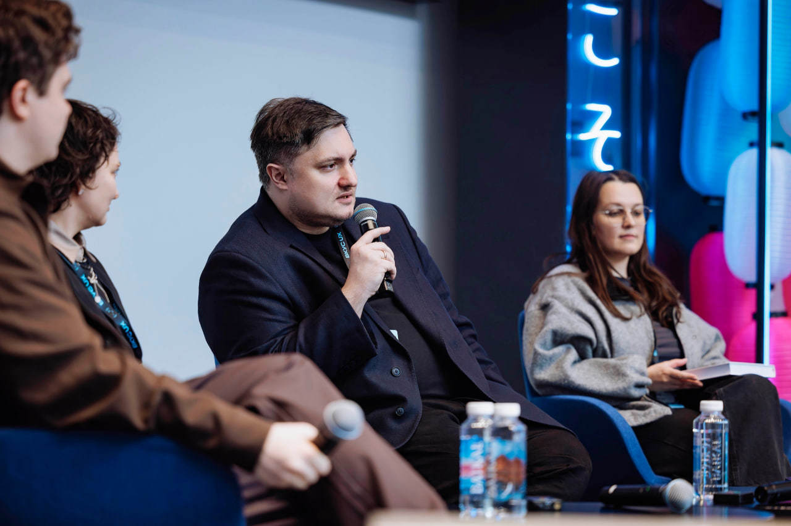
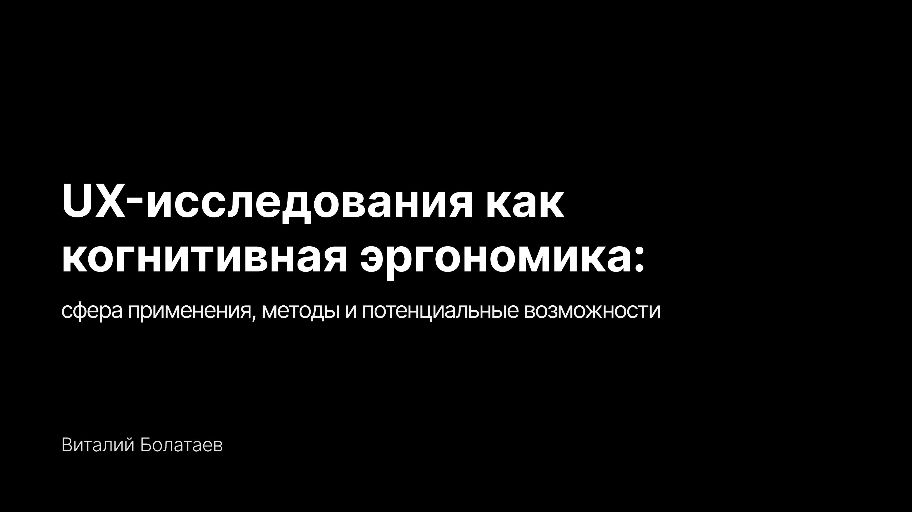
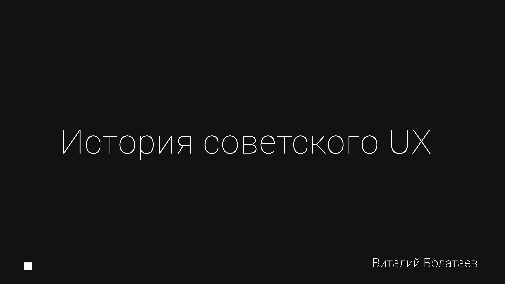
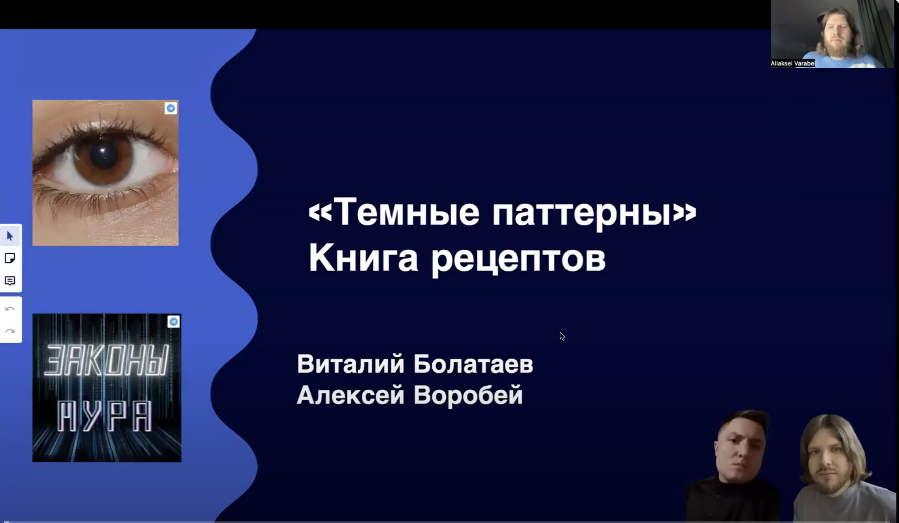

ВКУС UX: митап от исследователей VK
Отзыв о книге «Качественные исследования в бизнесе» Ефимова и Жичкиной - на очном митапе исследователей VK, в панельной дискуссии с коллегами по индустрии.

UX-исследования как когнитивная эргономика
Сфера применения, методы и потенциальные возможности: от психотехники и эпохи Knobs and Dials до CTA/ACTA и Developer Experience - почему «UX-театр» проигрывает научной строгости human factors.

Applied Cognitive Task Analysis для разработки UX-требований к продуктам
Разбор метода ACTA на примере проектирования редактора бизнес-процессов в тасктрекере «Яга».

UX в СССР: психотехника, проектирование АЭС и наследие Нейрата
Как советская инженерная психология, Изостат Отто Нейрата и авария на Три-Майл-Айленд определили принципы человеко-машинного взаимодействия - от Мемекса и Мунданеума до мнемосхем на ТЭЦ-21.
Открыть презентацию · PDF TALK
Юридические проблемы и классификация тёмных паттернов в дизайне интерфейсов
Где заканчивается манипулятивный дизайн и начинается юридическая ответственность за интерфейсные решения.
Смотреть на YouTube TALK
Тёмные паттерны в дизайне
Совместный вебинар с Алексеем Воробьём: этические и юридические аспекты тёмных паттернов в UX, с разбором кейса FTC против Epic Games.
Смотреть на YouTube TALK
Проект с ИИ-Таро
О спекулятивном интерфейсе на стыке мантических практик и больших языковых моделей.
Смотреть на YouTube PODCAST
Что такое Serious game?
Как эксперт по продуктовым исследованиям X5 рассказывает о серьёзных играх и геймификации.
Слушать выпускLegal Implication of Software Interface in the Context of Dark Patterns
Презентация для юристов: как интерфейсные решения становятся предметом права на пересечении бизнеса, дизайна и закона.
Открыть PDF PDF · RUМастер-класс по тёмным паттернам
Практический разбор: продукт оценивается по числу уловок, дизайн-система становится юридическим документом, а ваш UX может «дать показания» в суде.
Открыть PDF